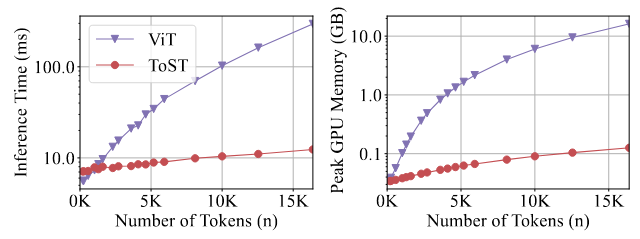

Empirical Results
Linear Complexity of Compute and Memory
ToST achieves linear scaling with sequence length in both computation time and memory usage, making it significantly more efficient than standard transformers.
Complexity Analysis comparison.
Speed & Mem usage comparison evaluated on GPUs.
Competitive Performance on Vision
ToST demonstrates comparable performance with conventional transformers while being significantly more computationally efficient.

Experiments on Long Sequence Tasks and Language Modeling
ToST can be extended and works on various task scenerios including causal language modeling.
Performance on NLP tasks.
Principled Design
Since ToST is derived from a learning objective through unrolling, we can analyze the behavior of a learned model layer-by-layer in a principled manner.
The variational compression term of the TSSA outputs at different layers of the ToST model
Interpretability in Learned Representations
ToST naturally produces interpretable attention patterns without complex self-supervised training
Comparison of [CLS] token attention map from the last head in the penultimate global class attention layer.
Visualize each row (after reshaping) of the estimated membership matrix $\Pi$ in the TSSA layer.
In summary, we develop a novel, efficient attention mechanism derived from a theoretically principled objective of data compression and representation learning. Our proposed TSSA operator is unique among attention operators in that it does not require computing pairwise interactions between tokens and instead is constructed from a second moment statistic of projected token features. This results in our operator being significantly more efficient than standard attention operators, while still achieving similar performance to comparable transformers. We believe that this work provides an initial demonstration of the tremendous potential in designing novel and efficient deep architectures from mathematical principles.